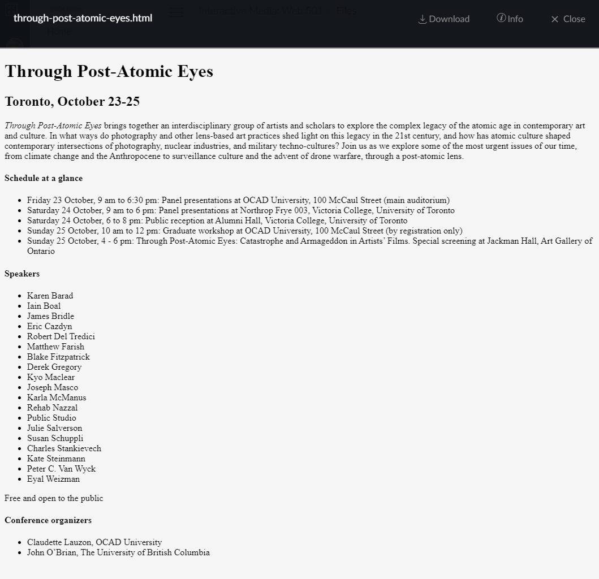
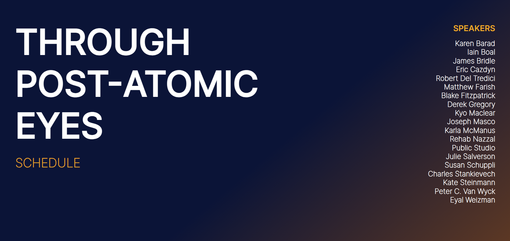
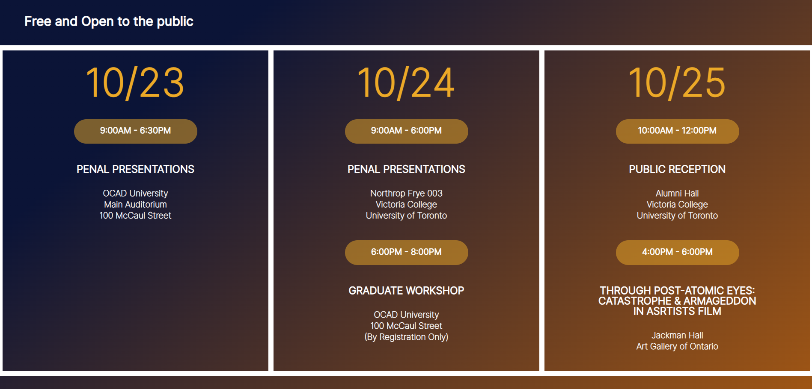
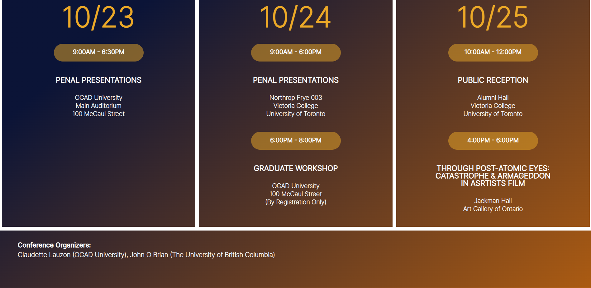

For this poster project, I chose Content Package #8.

I decided to split the content across two pages. The first page provides information about the event,
while the second page focuses on the schedule and its specifics.
Here is the design I drafted in Figma.
Here is the final results (scrolling from my laptop screen).
Page One.
Page Two
  
In conceptualizing this project, I began by designing a poster inspired by the content package provided.
My aim was to create a clean, minimalist aesthetic while incorporating gradients in the background to enhance
visual impact. Drawing inspiration from posters that take on vibrant hues against darker backgrounds to
emphasize key information, I decided to apply similar concept into my design.
Throughout the refinement process, I leveraged my coding skills to translate
the poster into a functional website. This involved integrating various coding practices to
develop the design that combines the elements effectively.
In my draft design with Figma, I included logos from the participated organizations/schools, however, since images
are not allowed, I decided not to include those into the final result.
For future improvements, I would try to make the website more responsive, especially the design to adapt to
different screen sizes. For the current version, the elements on the first page are not responsive that they
change their positions as the screen size changes.